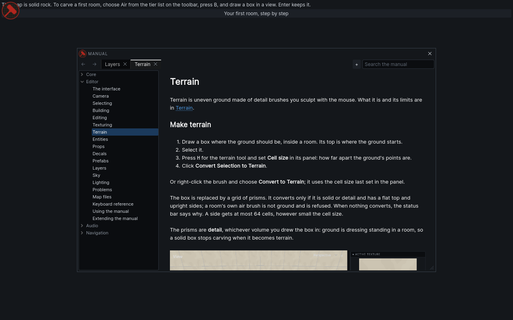
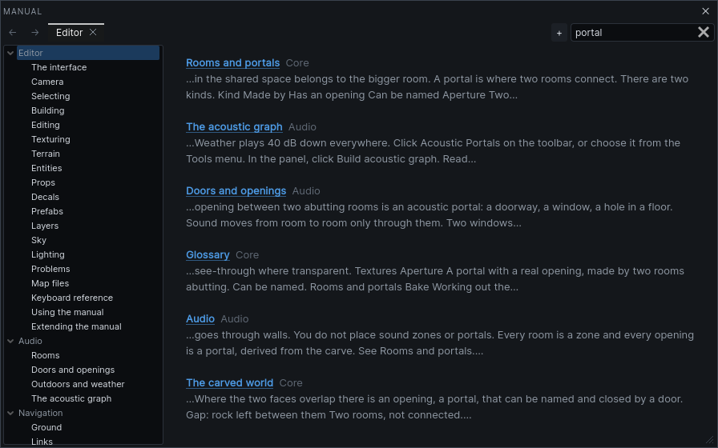

Using the manual
Press Shift F1, or choose Help > Manual…, to open this manual. It opens in its own window over the editor, and you can keep working while it is open.

Opening it at the right page
If a tool is active when you open the manual, it opens at that tool's page. Press H for the terrain tool, then Shift F1, and you get Terrain.
With the select tool, or a tool that has no page, the manual opens where you left it.
Finding a page
The index on the left lists every section and its pages. Click a section to open its first page. The page you are reading is highlighted.
Drag the divider between the index and the page to make the index wider or narrower.
Searching
Type in the search field at the top right. The page is replaced by a list of the pages that match every word you typed, best match first. A match in a page's title counts most, then its keywords, then its headings, then its text.
- Press
CmdFto put the cursor in the search field. - Type a word or two:
sculpt terrain. - Press
Enterto open the top result, or click any result.
Press Esc to clear the search and go back to the page.

Links
Blue text is a link. Click it to go there. A link to a heading scrolls to that heading.
Cmd-click or middle-click a link to open it in a new tab.- A link to a website opens in your web browser.
- Orange text is a link to a page that does not exist yet.
Tabs
Each tab keeps its own history, so Back and Forward move within that tab only.
- Click + or press
CmdTfor a new tab. It opens at the first page of the manual. - Click a tab's ×, or press
CmdW, to close it. Cmd-click a page in the index to open it in a new tab.
Keys
| Key | Does |
|---|---|
Shift F1 |
open the manual; in the manual, close it |
Esc |
clear the search; with no search, close the manual |
Cmd F |
search |
Cmd [ / Cmd ] |
back / forward |
Alt Left / Alt Right |
back / forward |
Cmd T |
new tab |
Cmd W |
close tab |
Ctrl works in place of Cmd for these.
Where you left off
The manual remembers its tabs, the page each one shows and how far down you read, which tab was in front, the window's size and place, and the width of the index. Close the editor and open it again, and the manual is as you left it.
Drag the manual's title bar to move it. Drag the corner at its bottom right to resize it.